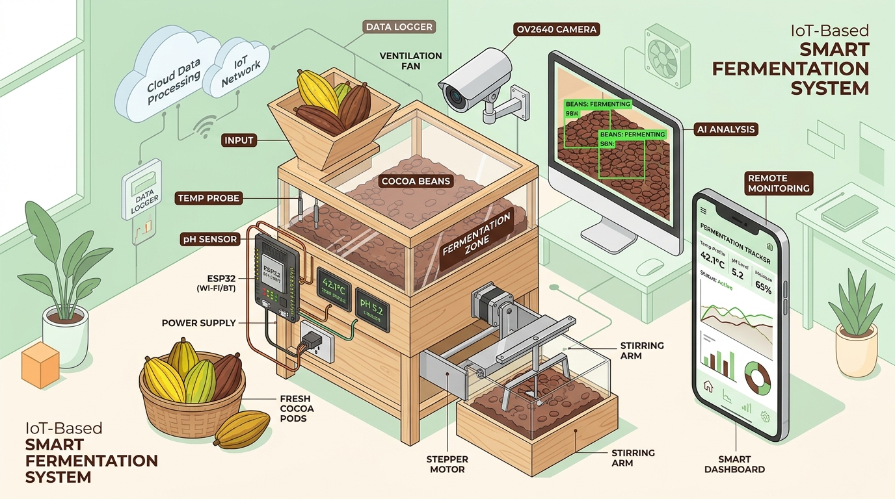

Rancang Bangun Kotak Fermentasi Biji Kakao Berbasis IoT dengan Klasifikasi Tingkat Fermentasi Menggunakan Computer Vision
Proposal Lomba Riset Mahasiswa — Badan Pengelola Dana Perkebunan (BPDP) 2026

💡 Ringkasan Eksekutif Riset
Riset ini merancang prototipe kotak fermentasi biji kakao otomatis berbasis Internet of Things (IoT) yang dipadukan dengan Computer Vision (AI/CNN) untuk mendeteksi kematangan fermentasi secara real-time. Inovasi ini memadukan sensor presisi (suhu inti, suhu/kelembapan lingkungan, dan pH pulp), pengaduk motorik otomatis, kamera ESP32-CAM, serta model klasifikasi Convolutional Neural Network (ResNet50 & MobileNetV2) yang divalidasi langsung melalui uji laboratorium dan uji belah (cut test).
1. Urgensi & Masalah Nyata
Produksi dan mutu ekspor kakao Indonesia terus mengalami tantangan berat. Sebagian besar petani kakao rakyat masih memfermentasi biji secara tradisional di peti kayu atau keranjang daun pisang tanpa instrumen ukur yang terkontrol. Biji dibalik hanya berdasarkan perkiraan hari, sehingga sering menghasilkan biji berwarna ungu atau keabu-abuan (slaty) yang rasanya sepat, pahit, dan terkena potongan harga di pasar internasional.
2. Inovasi Perangkat Keras & IoT
Prototipe kotak dirancang menggunakan kayu penahan panas berkapasitas ±15 kg biji basah per batch, dilengkapi sensor dan aktuator cerdas:
Sensor Suhu Inti DS18B20
Probe stainless tahan air yang mengukur suhu tumpukan biji kakao secara kontinu (target akurasi ≥ 98%).
Sensor SHT20 & Probe pH
Memantau kelembapan/suhu ruang fermentasi serta tingkat keasaman (pH) pulp kakao dengan sensor PH-4502C.
Pengadukan Otomatis
Motor DC bertenaga dan relai yang memutar biji otomatis pada jam ke-48 atau saat suhu mencapai batas ≥ 50°C.
ESP32 & ESP32-CAM
Mikrokontroler pengirim data telemetri ke server, serta modul kamera dengan pencahayaan LED tetap untuk memotret biji berkala.
3. Klasifikasi Mutu Berbasis AI / CNN
Model kecerdasan buatan dilatih untuk mengklasifikasi kondisi fermentasi ke dalam 3 kategori: Kurang Fermentasi, Optimal, dan Fermentasi Berlebih.
- A Arsitektur Model: Menggunakan Transfer Learning ResNet50 (ekstraksi fitur mendalam) dan MobileNetV2 (arsitektur ringan untuk komputasi cepat di perangkat seluler).
- B Validasi Bebas Bias: Menggunakan protokol leave-one-batch-out pada 5 batch riset dan diuji pada 1 batch independen yang sama sekali baru, divalidasi dengan uji belah laboratorium (bukan sekadar pelabelan operasional).
- C Visualisasi Grad-CAM: Memastikan algoritma CNN benar-benar mengenali tekstur dan warna keping biji kakao, bukan terdistraksi oleh latar kotak.
4. Ekosistem Aplikasi Seluler (Flutter & Cloud)
Data sensor dan hasil prediksi citra dikirim ke backend API (Flask & basis data MySQL) lalu divisualisasikan dalam aplikasi seluler berbasis Flutter:
- Dashboard Real-Time: Grafik perkembangan suhu inti, kelembapan, dan pH jam demi jam.
- Status Prediksi Otomatis: Memberi tahu petani kapan proses fermentasi telah selesai dan siap dijemur.
- Remote Control Pengaduk: Tombol interaktif untuk memicu pengadukan manual dari jarak jauh kapan pun dibutuhkan.
5. Target & Luaran Riset
3 Unit Prototipe
Kotak fermentasi IoT siap uji lapangan.
≥ 3.000 Citra
Dataset citra kakao terlabel dan tervalidasi lab.
Aplikasi Mobile
Aplikasi monitoring untuk kelompok tani.
Artikel Ilmiah
Publikasi riset di jurnal nasional bereputasi.